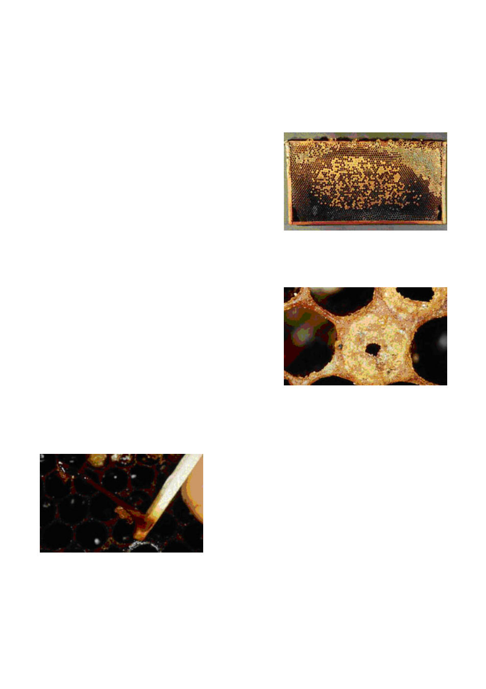

If eggs appear to be on the side, rather on the bottom of the cell, in the middle, this indicates an old
/ failing queen. Similarly, if there are an abnormal number of drone cells evident (raised bullet
shaped capping) the queen has lost / is losing her fertility and the hive should be united with
another. It is not often that there will be sufficient brood to enable the colony to survive if the queen
is a drone layer, even if a new young queen is introduced.
If the brood laying is scattered (as below) this may mean indication of an aging / failing queen,or the
presence of disease.
Presence of diseases
It is vital to check for any signs of disease early in spring.
A very slow or negligible build up in brood numbers at
this time may be an indicator of the presence of AFB or
Nosema.Both of these may result in the complete loss of
a hive.
a) AFB - A virulent, destructive and notifiable
disease.Whilst difficult to detect in the early stages,
detection off this disease is important to prevent its
spread to other hives which will also succumb to the disease! It may be found in both weak and
strong hives!!
Symptoms of AFB in the Brood.
AFB diseased larvae and pupae always lie stretched out
on their backs on the lower wall of their cells, from the
back of the cell (the mid-rib of the comb) to the cell
opening. If the cell is likened to a clock-face, the diseased
individuals will be positioned at the bottom of the face
between the figures 5 and 7.
The caps of cells containing diseased larvae or pupae
may be sunken, concave, dark and at times greasy-
looking. Some caps may be perforated and other caps may be totally removed.
The match stick test method of diagnosing AFB is very effective. - To do this insert a matchstick into
the moist, decaying remains of a dead larva may be which may then be slowly withdrawn from the
cell. The remains will stretch approx. 25 mm or more.
The Livestock Disease Control Act 1994 requires that
anyone who knows or suspects that AFB is present in
his or her apiary, must notify a DEPI apiary officer
within 12 hour.
www.agriculture.vic.gov.au/agriculture/pests-diseases-
and-weeds/animal-diseases/bees/diagnosis-of-
americal-foulbrood-disease-of-honey-bee-brood
b) Nosema - A microscopic organism which lives in the
bee gut. Most readily evidenced by spotting of excreta on combs and inside hive walls. This can
lead to further spread of the infection. Nosema may also significantly weaken bees such they cannot
fly, and may be seen in crawling on the ground in front of the hive, and attempting to fly. Usually
they die some distance away from the hive. Although this problem can significantly deplete a hive,
improvement in the weather may rapidly assist a colony to recover.
http://agriculture.vic.gov.au/agriculture/pests-diseases-and-weeds/animal-
diseases/bees/nosema-disease-of-honey-bees